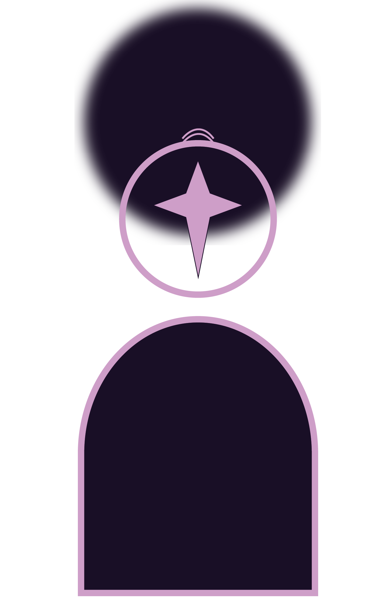

Je m'appelle Daény Drané et je suis étudiante en deuxième année de graphisme, spécialisée en image de communication.
Actuellement étudiante en deuxième année de design graphique, spécialité image de communication, au lycée Auguste Renoir à Paris, je souhaiterai effectuer un stage de 3 mois au sein d'une agence ou d'une entreprise.
Curieuse et passionnée, j'aime découvrir, observer et expérimenter de nouvelles façons de créer. Mes inspirations puisent autant dans l'univers du graffiti, notamment celui de Fafi, que dans le game design aux esthétiques singulières comme le Weirdcore.
Dans mon travail, qu'il s'agisse de projets académiques ou personnels, je laisse une place importante à l'intuition afin de concevoir des univers uniques et spontanés.
TÉL : +33 07 61 40 85 34
MAIL : daeny.drane16@gmail.com